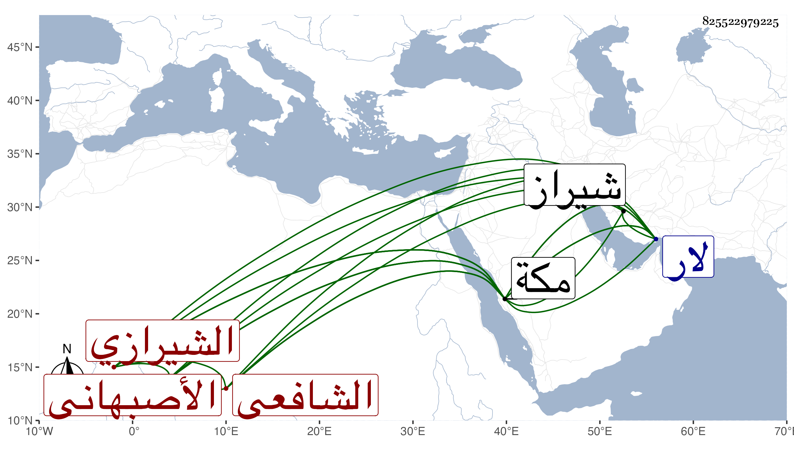

0902Sakhawi.DawLamic.ITO20230111-ara1.EIS1600.825522979225
Biography ID: 825522979225
569
محمد بن علي بن محمود بن علي الملقب سناء القطب بن الزين بن النجم ابن الزين الأصبهاني ثم الشيرازي الشافعي نزيل مكة ووالد لعفيف الدين محمد الآتي . ولد بعيد العشرين وثمانمائة بشيراز ونشأ بها فحفظ القرآن عند حسين الملك وأخذ النحو عن محيي الدين الكوش كناري قرية من قرى لار والصرف عن تاج الدين الخفري والمنطق عن الخواجا حسن شاه البقال والمعاني والبيان عن الخواجا الشمس محمد الشيرازي عرف بالمؤيد وأصول الدين عن غياث الدين المنشي وقوام الدين الكربالي أحد تلامذة الجرجاني وعقد مجلس الوعظ بجامع بلده العتيق وبلار وهرموز وغيرها ، وحج وجاور بمكة نحو ثمان سنين ولقيني في سنة ست وثمانين فقرأ علي أشياء دراية ورواية واغتبط بذلك وسمع الكثير من تصانيفي وغيرها ، وكتبت له إجازة حافلة كتبت منها في التاريخ الكبير ، مع فضيلة في العربية والصرف وتصديه لإقرائهما هناك مع إنجماع وتقنع ورجع إلى بلاده وبلغني أنه تمول وطابت دنياه ثم عاد لمكة ولقيني بها في سنة سبع وتسعين فما بعدها وتزايد انجماعه بحيث أعرض عن الأقراء وسمع علي فيها وفي التي بعدها أشياء وهو على قدم صالح .
